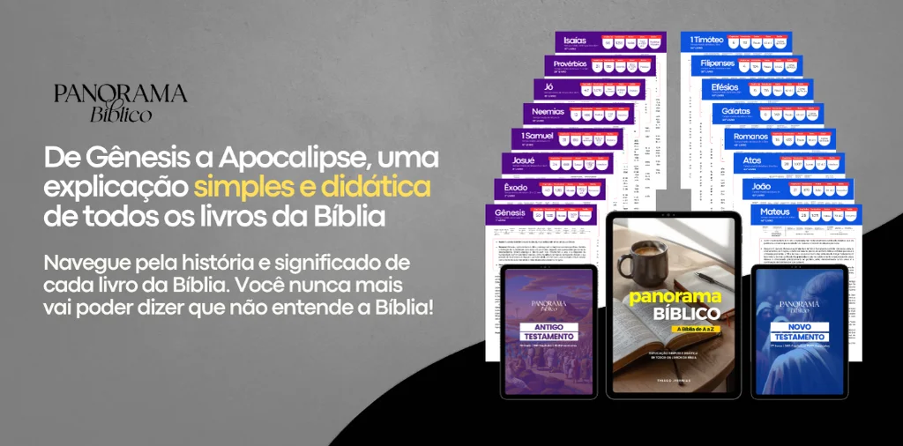
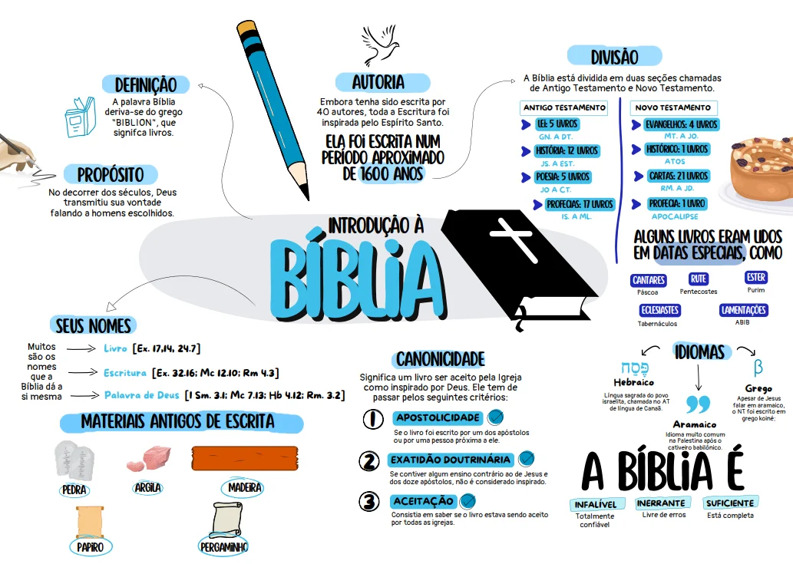

Entenda a Bíblia Completamente e sem Complicações
Descubra como dominar as Escrituras, conectar os eventos históricos e aplicar os ensinamentos divinos na sua vida com o guia definitivo Panorama Bíblico.
Sim, Quero Dominar a Bíblia
Dificuldades Comuns no Estudo e Leitura das Escrituras
Ordem Cronológica
Muitos leitores enfrentam dificuldades para associar a ordem dos acontecimentos históricos e seus períodos.
Conexão dos Textos
Ler trechos isolados costuma dificultar a compreensão da mensagem central e do contexto geral.
Linguagem Complexa
Textos e termos antigos podem tornar o aprendizado cansativo, levando à desistência nos livros mais profundos.
O Panorama Bíblico foi desenvolvido para solucionar essas dificuldades, servindo como um roteiro visual para facilitar a leitura e o aprendizado.
O Guia Definitivo para o Estudante da Bíblia
O objetivo do Panorama Bíblico é ser um facilitador na compreensão dos textos e sua cronologia. O material auxilia a estruturar a leitura, facilitando o entendimento do contexto geral e a aplicação prática do conhecimento no cotidiano.
- Didático e Visual: Mapas, cronologias e resumos facilitados.
- Completo: De Gênesis a Apocalipse, nada fica de fora.
- Prático: Linguagem acessível para todos os níveis de conhecimento.
Para Quem o Panorama Bíblico Foi Desenvolvido?
Este guia é ideal para atender a diferentes perfis de estudo:
Para quem É
- Iniciantes na Leitura: Para quem busca ler de maneira organizada e estruturada desde o começo.
- Líderes e Professores: Que buscam recursos didáticos, cronologias e mapas visuais para o ensino.
- Leitores Avançados: Que desejam organizar e estruturar os conhecimentos de forma sistemática.
- Pessoas Ocupadas: Que necessitam de resumos práticos para encaixar o aprendizado no dia a dia.
Para quem NÃO é
- Teologia acadêmica complexa: Não é um mestrado acadêmico denso ou monografia científica.
- Estudo sem Prática: O método exige o acompanhamento prático e leitura ativa junto ao guia de estudos.
- Prefere livros físicos pesados: O material é 100% digital (PDF) para ler em qualquer tela.
- Estudos Superficiais: Para quem prefere continuar a leitura de versículos isolados e sem contexto histórico.
O Que Você Vai Aprender?
Um conteúdo denso, profundo, porém entregue de forma leve.
- O que é a Bíblia e como foi escrita
- Resumo de todos os livros
- Divisão do Antigo e Novo Testamento
- Período histórico e cronologia dos fatos
- Formação do povo hebreu
- Períodos: Juízes, Reis e Profetas
- Divisão do Reino de Israel
- Principais histórias e personagens bíblicos
- O Ministério de Jesus detalhado
- O Ministério e as viagens de Paulo
- Como será o fim dos tempos
- Entendendo as profecias finais
- Aplicação para a vida cristã hoje
São mais de 200 páginas de puro conteúdo transformador.
O que dizem os leitores do Panorama Bíblico
Mais de 1.200 pessoas já usaram nosso guia para aprofundar seu conhecimento bíblico.
"Sempre começava a ler a Bíblia e parava porque me perdia nos nomes e datas. Esse guia foi um divisor de águas na minha vida devocional. Consigo ver o quadro geral de Gênesis a Apocalipse!"
"Eu achava que entender a cronologia bíblica era impossível sem gastar rios de dinheiro em cursos. O material organizou tudo na minha mente. Os mapas e tabelas são fantásticos para usar no pequeno grupo!"
"Material de extrema qualidade e com excelente fidelidade teológica. Didático, simples e direto ao ponto. Indico com segurança para todos os novos convertidos da minha comunidade."
"A leitura é leve, dinâmica e super explicativa. Consigo estudar no meu tempo livre e o bônus dos mapas mentais facilitou demais a memorização das doutrinas principais. Excelente!"
Bônus Exclusivo
Mapa Mental de Doutrina Bíblica
Receba gratuitamente um pacote com mapas mentais para facilitar a memorização dos livros e eventos.
- Visual e Prático
- Ideal para Impressão
- Resumo de Cada Livro

Oferta Especial de Lançamento
Invista no seu conhecimento espiritual hoje.
- Ebook Completo Panorama Bíblico
- Acesso Imediato (Download)
- Formato PDF (Ler em qualquer lugar)
- Garantia de 7 Dias
Compra 100% Segura • Acesso Imediato • SSL Criptografado
Sem Perguntas. Sem Burocracia. Risco Zero!
O aprendizado e a satisfação do leitor são os nossos principais objetivos. Por isso, oferecemos uma Garantia Incondicional de 7 Dias.
Caso o material não atenda às expectativas ou ocorra a desistência da compra por qualquer motivo, basta enviar um e-mail. A devolução de 100% do valor pago será feita de forma imediata.
O leitor pode conhecer o Panorama Bíblico primeiro e decidir depois!
Perguntas Frequentes
O Panorama Bíblico é um produto 100% digital (Ebook em PDF). Você receberá o acesso por e-mail imediatamente após a confirmação do pagamento e poderá ler no celular, tablet ou computador.
Assim que o pagamento for aprovado, você receberá um e-mail com o link para download do material. É rápido e automático.
Sim! O material foi desenhado exatamente para ser didático e simples, ideal tanto para iniciantes quanto para quem já estuda a Bíblia e quer organizar seu conhecimento.